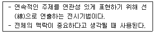
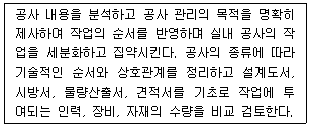
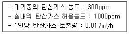
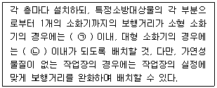

실내건축기사 (2022-03-05 기출문제)
1과목: 실내디자인계획
1. 고정창에 관한 설명으로 옳지 않은 것은?
- 적정한 자연 환기량 확보를 위해 사용된다.
- 크기에 관계없이 자유롭게 디자인할 수 있다.
- 형태에 관계없이 자유롭게 디자인할 수 있다.
- 유리와 같이 투명재료일 경우 창이 있는 것을 알지 못해 부딪힐 위험이 있다.
(정답률: 79%)

2. 디자인의 원리에 관한 설명으로 옳은 것은?
- 균형은 정적인 경우에만 시각적 안정성을 가져올 수 있다.
- 강조는 힘의 조절로서 전체 조화를 파괴하는데 주로 사용된다.
- 리듬은 청각의 원리가 시각적으로 표현된 것이라 할 수 있다.
- 통일과 변화는 서로 대립되는 관계로, 동시 사용이 불가능하다.
(정답률: 86%)
3. 질감(texture)에 관한 설명으로 옳지 않은 것은?
- 시각적으로만 지각할 수 있는 어떤 물체 표면상의 특징을 말한다.
- 질감의 선택에서 중요한 것은 스케일, 빛의 반사와 흡수등이다.
- 효과적인 질감 표현을 위해서는 색채와 조명을 동시에 고려해야 한다.
- 나무, 돌, 흙 등의 자연 재료는 인공적인 재료에 비해 따뜻함과 친근감을 준다.
(정답률: 88%)
4. 다음 설명에 알맞은 특수전시기법은?

- 디오라마 전시
- 파노라마 전시
- 아일랜드 전시
- 하모니카 전시
(정답률: 78%)
5. 다음 각 공간의 관계가 주택 평면계획 시 고려되는 인접의 원칙에 속하지 않는 것은?
- 거실 - 현관
- 식당 - 주방
- 거실 - 식당
- 침실 - 다용도실
(정답률: 88%)
6. 단독주택의 부엌에 관한 설명으로 옳은 것은?
- 작업대의 배치유형 중 일렬형은 대규모 부엌에 주로 이용된다.
- 일반적으로 부엌의 크기는 주택 연면적의 3% 정도가 가장 적당하다.
- 일반적으로 작업대의 높이는 500~600mm, 깊이는 750~800mm가 적당하다.
- 작업대는 능률적인 작업을 위해 준비대→개수대→조리대→가열대→배선대 순서로 배치한다.
(정답률: 79%)
7. 생활에 적합한 건축을 위해 인체와 관련된 모듈의 사용에 있어 단순한 길이의 배수보다는 황금비례를 이용함이 타당하다고 주장한 사람은?
- 알바 알토
- 르 꼬르뷔지에
- 월터 그로피우스
- 미스 반 데로에
(정답률: 90%)
8. 주택의 동선계획에 관한 설명으로 옳지 않은 것은?
- 가사노동의 동선은 가능한 남측에 위치시키도록 한다.
- 사용빈도가 높은 공간은 동선을 길게 처리하는 것이 좋다.
- 동선이 교차하는 곳은 공간적 두께를 크게 하는 것이 좋다.
- 개인, 사회, 가사노동권 등의 동선은 상호간 분리하는 것이 좋다.
(정답률: 87%)
9. 다음 중 VMD의 목적과 가장 거리가 먼 것은?
- 상품의 이미지를 높인다.
- 차별화 전략으로 활용한다.
- 매장구성의 개성화를 추구한다.
- 효율적인 유지보수가 용이하다.
(정답률: 87%)
10. POE(Post-Occupancy Evaluation)의 의미로 가장 알맞은 것은?
- 건축물을 사용해 본 후에 평가하는 것이다.
- 낙후 건축물의 이상 유무를 평가하는 것이다.
- 건축물을 사용하기 전에 성능을 예상하는 것이다.
- 건축도면 완성 후 건축주가 도면의 적정성을 평가하는 것이다.
(정답률: 79%)
11. 건축제도에서 다음과 같은 재료 구조 표시 기호(단면용)가 의미하는 것은?
- 벽돌
- 석재
- 인조석
- 치장재
(정답률: 70%)
12. 그리스의 오더 중 기단부는 단 사이에 수평홈이 있으며, 주두는 소용돌이 형태의 나선형인 볼류트로 구성된 것은?
- 도릭 오더
- 이오닉 오더
- 터스칸 오더
- 코린티안 오더
(정답률: 63%)
13. 스테인드 글라스(Stained Glass)에 관한 설명으로 옳지 않은 것은?
- 스테인드 글라스는 빛의 투과광을 주로 이용한다.
- 르네상스 시대에 스테인드 글라스 예술이 대규모로 활성화되었다.
- 스테인드 글라스의 기원은 로마시대 초기의 교회 건물내에서 찾아볼 수 있다.
- 아르누보를 통해 스테인드 글라스 예술이 부활하였으나 곧 근대건축운동에 의해 쇠퇴 하였다.
(정답률: 54%)
14. 사무소 건축의 평면유형에 관한 설명으로 옳지 않은 것은?
- 2중지역 배치는 중복도식의 형태를 갖는다.
- 3중지역 배치는 저층의 소규모 사무소에 주로 적용된다.
- 2중지역 배치에서 복도는 동서 방향으로 하는 것이 좋다.
- 단일지역 배치는 경제성보다는 쾌적한 환경이나 분위기 등이 필요한 곳에 적합한 유형이다.
(정답률: 67%)
15. 결정된 디자인으로 견적, 입찰, 시공 등 설계 이후의 후속 작업과 시공을 위한 제반 도서를 제작하는 설계 과정은?
- 기획설계
- 기본설계
- 실시설계
- 기본계획
(정답률: 63%)
16. 상점의 쇼윈도에 관한 설명으로 옳지 않은 것은?
- 쇼윈도의 평면 형식 중 만입형은 점두의 진열면이 크다.
- 쇼윈도의 진열 바닥 높이는 일반적으로 상품의 종류에 따라 결정된다.
- 쇼윈도의 단면 형식 중 다층형은 넓은 도로 폭을 지닌 상점에 적용하는 것이 좋다.
- 쇼윈도의 배면 처리 형식 중 개방형은 폐쇄형에 비해 쇼윈도 진열 자체에 대한 주목성이 강조된다.
(정답률: 53%)
17. 실내공간 구성요소 중 벽(wall)에 관한 설명으로 옳지 않은 것은?
- 공간을 에워싸는 수직적 요소이다.
- 다른 요소에 비해 조형적으로 가장 자유롭다.
- 외부세계에 대한 침입 방어의 기능을 갖는다.
- 가구, 조명 등 실내에 놓여지는 설치물에 대해 배경적 요소가 된다.
(정답률: 87%)
18. 실내 기본요소 중 천장에 관한 설명으로 옳은 것은?
- 바닥과 함께 실내공간을 구성하는 수직적 요소이다.
- 바닥이나 벽에 비해 접촉빈도가 높으며 공간의 크기에 영향을 끼친다.
- 천장을 낮추면 친근하고 아늑한 공간이 되고 높이면 확대감을 줄 수 있다.
- 바닥은 시대와 양식에 의한 변화가 현저한데 비해 천장은 매우 고정적이다.
(정답률: 79%)
19. 포겐도르프 도형과 관련된 착시와 유형은?
- 방향의 착시
- 길이의 착시
- 다의도형 착시
- 역리도형 착시
(정답률: 48%)
20. 사무소 건축의 실단위계획 중 개실시스템에 관한 설명으로 옳지 않은 것은?
- 독립성 확보가 용이하다.
- 공간의 길이에 변화를 줄 수 있다.
- 전면적을 유효하게 이용할 수 있어 공간절약상 유리하다.
- 연속된 복도 때문에 공간의 깊이에 변화를 줄 수 없다.
(정답률: 48%)
2과목: 실내디자인 색채 및 사용자 행태분석
21. 아파트 건축물의 색채 계획 시 고려해야 할 사항이 아닌 것은?
- 개인적인 기호에 의하지 않고 객관성이 있어야 한다.
- 주변에서 가장 부각될 수 있게 독특한 색채를 사용한다.
- 전체적으로 질서가 있어야 하며 적당한 변화가 있어야 한다.
- 주거민을 위한 편안한 색체 디자인이 되어야 한다.
(정답률: 87%)
22. 디지털 색채 시스템 중 HSB시스템에 대한 설명으로 틀린 것은?
- 먼셀의 색채개념인 색상, 명도, 채도를 중심으로 선택하도록 되어 있다.
- 프로그램 상에서는 H모드, S모드, B모드를 볼 수 있다.
- H모드는 색상을 선택하는 방법이다.
- B모드는 채도 즉, 색채의 포화도를 선택하는 방법이다.
(정답률: 72%)
23. 먼셀 색체계에 관한 설명 중 잘못된 것은?
- R, Y, G, B, P의 5색과 그 보색인 5색을 추가하여 10 색상을 기본으로 만든 것이다.
- 무채색의 명도는 숫자 앞에 N을 붙인다.
- 채도 단위는 2단위를 기본으로 하였으나 저채도 부분에서는 실용적으로 1과 3을 추가하였다.
- 유채색의 명도는 0.5 단위로 배열되어 0.5부터 9.5까지 19단계로 하였다.
(정답률: 54%)
24. 빛의 성질과 색의 지각에 관한 설명 중 틀린 것은?
- 노란 바나나의 색을 지각하는 것은 빛의 반사와 관계가 있다.
- 파란 셀로판지를 통해 색을 지각하는 것은 빛의 투과와 관계가 있다.
- 검은 도화지의 색을 지각하는 것은 빛의 흡수와 관계가 있다.
- 하늘의 무지개 색을 지각하는 것은 빛의 회절과 관계가 있다.
(정답률: 59%)
25. 다음 중 가장 가벼운 느낌을 주는 배색은?
- 파랑 - 검정
- 노랑 - 흰색
- 빨강 - 보라
- 청록 - 초록
(정답률: 85%)
26. 색에 관한 설명 중 잘못된 것은?
- 황색은 녹색보다 진출하여 보인다.
- 주황색은 녹색보다 따뜻하게 느껴진다.
- 황색은 청색보다 커 보인다.
- 황색은 녹색보다 무겁게 느껴진다.
(정답률: 73%)
27. 다음 중 색채조절의 목표가 아닌 것은?
- 안정성
- 독창성
- 능률성
- 심미성
(정답률: 70%)
28. PANTONE 색표집에 대한 설명으로 틀린 것은?
- 색의 기본 속성에 따라 논리적인 순서로 배열되어 있다.
- 1963년 미국의 로렌스 하버트가 고안하였다.
- 매년 올해의 컬러를 발표하여 다양한 분야의 트렌드를 제안하고 있다.
- 인쇄 및 소재별 잉크를 조색하여 제작한 실용적인 색표집이다.
(정답률: 48%)
29. 색채가 지닌 심리적, 생리적, 물리학적 성질을 잘 활용하는 일을 색채조절(Color Conditioning)이라고 한다. 다음 중 색채조절이 특히 중요시되는 곳은?
- 옷가게
- 공부방
- 식료품점
- 생산공장
(정답률: 49%)
30. 색료의 3원색을 혼합한 이론상의 결과는?
- 초록
- 검정
- 하양
- 시안
(정답률: 75%)
31. 소파의 골격에 쿠션성이 좋도록 솜, 스펀지 등의 속을 많이 채워 넣고 천으로 감싼 소파로, 구조, 형태 및 사용상 안락성이 매우 큰 것은?
- 스툴
- 카우치
- 풀업체어
- 체스터필드
(정답률: 57%)
32. 시스템 가구에 관한 설명으로 옳지 않은 것은?
- 단순미가 강조된 가구로 수납기능은 떨어진다.
- 규격화된 단위 구성재의 결합으로 가구의 통일과 조화를 도모할 수 있다.
- 기능에 따라 여러 가지 형태로 조립, 해체가 가능하여 배치의 합리성을 도모할 수 있다.
- 모듈계획을 근간으로 규격화된 부품을 구성하여 시공기간 단축 등의 효과를 가져 올 수 있다.
(정답률: 85%)
33. 인간기준(human criteria)의 유형에 해당하지 않는 것은?
- 인간성능 척도
- 체계의 성능
- 주관적 반응
- 생리학적 지표
(정답률: 45%)
34. 인체 골격의 주요 기능으로 볼 수 없는 것은?
- 감각정보를 뇌와 척수로 전달한다.
- 신체를 지지하고 형상을 유지한다.
- 골격 내부의 골수는 조혈작용을 한다.
- 골격근의 기동적 수축에 따라 운동을 한다.
(정답률: 76%)
35. 신체동작의 유형 중 굽은 팔꿈치를 펴는 동작과 같이 관절이 만드는 각도가 증가하는 동작은?
- 굴곡(flexion)
- 내전(adduction)
- 외전(abduction)
- 신전(extension)
(정답률: 56%)
36. 눈의 구조와 기능에 관한 설명으로 옳은 것은?
- 간상세포는 색을 구별한다.
- 눈의 초점은 수정체의 두께가 조절되어 맞춰진다.
- 어두운 상태에서는 주로 원추세포가 사용된다.
- 빛의 망막의 전방에서 맺히는 현상을 원시라고 한다.
(정답률: 51%)
37. 인체측정 자료의 적용 시 극단치 설계 방식의 최소 치수로 설계해야 할 사항이 아닌 것은?
- 선반의 높이
- 조종 장치까지의 거리
- 등산용 로프의 강도
- 엘리베이터 조작 버튼의 높이
(정답률: 76%)
38. 신체활동의 에너지 소비량에 대한 설명으로 옳지 않은 것은?
- 작업 효율은 에너지 소비량에 반비례한다.
- 신체활동에 따른 에너지 소비량에는 개인차가 있다.
- 어떤 작업에 대한 에너지가(價)는 수행방법에 따라 달라진다.
- 신체적 동작 속도가 증가하면 에너지 소비량은 감소한다.
(정답률: 75%)
39. 생리적 상태 변동을 전류로 변환하여 측정되는 것으로 뇌파 전위도를 기록하는 것은?
- EEG
- EMG
- ECG
- EOG
(정답률: 48%)
40. 실현가능성이 동일한 4개의 대안이 있을 경우 총 정보량은 몇 bit인가?
- 0.5
- 1
- 2
- 4
(정답률: 60%)
3과목: 실내디자인 시공 및 재료
41. 다음은 공사현상에서 이루어지는 업무에 관한 설명이다. 이 업무의 명칭으로 옳은 것은?

- 실행예산편성
- 공정계획
- 작업일보작성
- 입찰참가신청
(정답률: 64%)
42. 표준형 시멘트 벽돌을 사용하여 1.5B쌓기로 벽을 쌓았을 때 벽의 두께로 가장 적합한 것은?
- 150mm
- 190mm
- 290mm
- 320mm
(정답률: 69%)
43. 셀프레벨링재에 관한 설명으로 옳지 않은 것은?
- 석고계 셀프레벨링재는 석고, 모래, 경화지연제 및 유동화제로 구성된다.
- 시멘트계 셀프레벨링재는 포틀랜드시멘트, 모래, 분산제 및 유동화제로 구성된다.
- 석고계 셀프레벨링재는 차수성이 좋아 옥외 및 실내에서 모두 사용한다.
- 셀프레벨링재 시공 후 요철부는 연마기로 다듬고, 기포는 된비범 석고로 보수한다.
(정답률: 64%)
44. 목재의 일반적인 성질에 관한 설명으로 옳지 않은 것은?
- 일반적으로 대부분의 목재가 인장강도에 비하여 압축강도가 크다.
- 섬유방향에 평행하게 힘을 가한 경우가 직각으로 가하는 경우보다 압축강도가 크다.
- 생목재를 건조할 경우 함수율이 30% 이상에서는 목재가 수축을 일으키지 않는다.
- 일반적으로 목재의 기건상태에서의 함수율은 10~15%이다.
(정답률: 44%)
45. 파손방지, 도난방지 또는 진동이 심한 장소에 적합한 망입(網入)유리의 제조 시 사용되지 않는 금속선은?
- 철선
- 황동선
- 청동선
- 알루미늄선
(정답률: 60%)
46. 공사 감리자가 시공의 적정성을 판단하기 위하여 수행하는 업무가 아닌 것은?
- 소방 완비 대상에 포함될 경우 법에 따른 적합한 설비를 하였는지를 확인하고 시공자가 관할 관청에 점검을 받도록 지도 한다.
- 설계도서에 준하여 시공되었는지에 대한 내용으로 체크리스트에 작성하고 이를 활용하여 시공의 적정성을 점검한다.
- 현장에서 제작 설치되는 제품의 규격과 제작 과정, 제작물의 작동 상태 등을 점검한다.
- 감리자가 직접 준공 도서를 작성하고 준공도서에 근거하여 시공 적정성을 파악한다.
(정답률: 62%)
47. 수지성형폼 중에서 표면경도가 크고 아름다운 광택을 지니면서 착색이 자유롭고 내열성이 우수한 것으로 마감재, 전기부품 등에 활용되는 수지는?
- 멜라민수지
- 에폭시수지
- 폴리우레탄수지
- 실리콘수지
(정답률: 29%)
48. 보강 블록조에서 내력벽 길이의 총합계가 45m이고, 그 층의 건물면적이 200m2일 경우 내력벽의 벽량은?(오류 신고가 접수된 문제입니다. 반드시 정답과 해설을 확인하시기 바랍니다.)
- 10cm/m2
- 15cm/m2
- 30cm/m2
- 45cm/m2
(정답률: 44%)
49. 강재의 응력-변형률 곡선에서 항복비란 항복점과 무엇에 대한 비율을 의미하는가?
- 인장강도점
- 탄성한계점
- 피로강도점
- 비례한계점
(정답률: 57%)
50. 다음 점토제품 중 소성온도가 높은 것에서 낮은 순서로 옳게 배열된 것은?
- 자기-석기-도기-토기
- 자기-도기-석기-토기
- 도기-자기-석기-토기
- 도기-석기-자기-토기
(정답률: 65%)
51. 공사원가계산서에 표기되는 비목 중 순공사원가에 해당되지 않는 것은?
- 직접재료비
- 노무비
- 경비
- 일반관리비
(정답률: 59%)
52. 아스팔트 방수시공을 할 때 바탕재와의 밀착용으로 사용하는 것은?
- 아스팔트 컴파운드
- 아스팔트 모르타르
- 아스팔트 프라이머
- 아스팔트 루핑
(정답률: 70%)
53. 얇은 강판에 마름모꼴의 구멍을 연속적으로 뚫어 그물처럼 만든 것으로 천장ㆍ벽 등의 미장 바탕에 사용되는 것은?
- 메탈라스
- 인서트
- 코너비드
- 논슬립
(정답률: 74%)
54. 다음 도료 중 내알칼리성이 가장 적은 도료는?
- 페놀수지도료
- 멜라민수지도료
- 초산비닐도료
- 프탈산수지에나멜
(정답률: 24%)
55. 실내건축공사 시 주로 사용되는 이동식비계의 안전조치에 관한 설명으로 옳지 않은 것은?
- 갑작스런 이동 및 전도를 방지하기 위하여 아웃트리거(outrigger)를 설치한다.
- 작업발판 위에서 사다리를 안전하게 사용할 수 있도록 작업발판은 항상 수평을 유지한다.
- 작업발판의 최대적재하중은 250킬로그램을 초과하지 않도록 한다.
- 비계의 최상부에서 작업을 하는 경우에는 안전난간을 설치한다.
(정답률: 49%)
56. 미장공사 시 사용되는 시멘트 모르타르 바름에 관한 설명으로 옳지 않은 것은?
- 시멘트와 모래를 혼합하고, 물을 부어서 잘 섞도록 하며, 비빔은 기계로 하는 것을 원칙으로 한다.
- 1회 비빔량은 2시간 이내 사용할 수 있는 양으로 한다.
- 초벌바름 또는 라스먹임은 2주일 이상 방치하여 바름면 또는 라스의 겹침 부분에서 생길 수 있는 균열이나 처짐 등 흠을 충분히 발생시킨다.
- 바름두께가 너무 얇을 경우에는 고름질을 하고 고름질 후에는 전면에서 거친면이 생기지 않도록 한다.
(정답률: 30%)
57. 동바리 마루에서 마루널 바로 밑에 오는 부재는 무엇인가?
- 동바리
- 멍에
- 장선
- 동바리돌
(정답률: 39%)
58. 할렬인장강도시험에서 재하 하중이 120kN에서 파괴된 지름 100mm, 길이 200mm인 콘크리트 시험체의 인장강도는?
- 약 2.0Mpa
- 약 2.4Mpa
- 약 3.0Mpa
- 약 3.8Mpa
(정답률: 18%)
59. 타일공사 시 보양에 관한 설명으로 옳지 않은 것은?
- 타일을 붙인 후 3일간은 진동이나 보행을 금한다.
- 줄눈을 넣은 후 경화 불량의 우려가 있거나 24시간 이내에 비가 올 우려가 있는 경우에는 폴리에틸렌 필름 등으로 차단ㆍ보양한다.
- 외부 타일 붙임인 경우에 태양의 직사광선을 최대한 받아 적정한 강도가 발현되도록 한다.
- 한중공사 시 시공면 보호를 위해 외기의 기온이 2℃ 이상이 되도록 임시로 시공 부분을 보양하여야 한다.
(정답률: 61%)
60. 운모계 광석을 800~1000℃정도로 가열 팽창시켜 체적이 5~6배로 된 다공질 경석으로 시멘트와 배합하여 콘크리트블록, 벽돌 등을 제조하는데 사용되는 것은?
- 암면(rock wool)
- 질석(vermiculite)
- 트래버틴(travertine)
- 석면(asbestos)
(정답률: 40%)
4과목: 실내디자인환경
61. 다음과 같은 조건에서 재실인원이 60명인 강의실의 필요 환기량은?

- 약 665m3/h
- 약 845m3/h
- 약 1085m3/h
- 약 1460m3/h
(정답률: 30%)
62. 천장에 매달려 조명하는 조명방식으로 조명기구 자체가 빛을 발하는 액세서리 역할을 하는 것은?
- 코브(cove)
- 브라켓(bracket)
- 펜던트(pendant)
- 코니스(cornice)
(정답률: 77%)
63. 다음은 소화기구의 설치에 관한 기준 내용이다. ()안에 알맞은 것은?

- ㉠ 15m, ㉡ 20m
- ㉠ 20m, ㉡ 15m
- ㉠ 20m, ㉡ 30m
- ㉠ 30m, ㉡ 20m
(정답률: 47%)
64. 저압옥내배선 공사 중 점검할 수 없는 은폐된 장소에서 시설할 수 없는 공사는?
- 금속관공사
- 케이블공사
- 금속덕트공사
- 합성수지관(CD관 제외) 공사
(정답률: 49%)
65. 일반적으로 하향급수 배관방식을 사용하는 급수 방식은?
- 고가수조방식
- 수도직결방식
- 압력수조방식
- 펌프직송방식
(정답률: 71%)
66. 건축적 채광방식 중 측창채광에 관한 설명으로 옳은 것은?
- 통풍, 차열에 유리하다.
- 근린 상황에 따른 채광 방해가 없다.
- 편측채광의 경우 실내 조도 분포가 균일하다.
- 투명 부분을 설치하더라도 해방감이 들지 않는다.
(정답률: 67%)
67. 인터폰 설비의 통화망 구성방식에 따른 분류에 속하지 않는 것은?
- 모자식
- 상호식
- 교차식
- 복합식
(정답률: 40%)
68. 음의 세기 레벨이 30dB인 음의 세기는? (단, 기준음의 세기는 10-12W/m2이다.)
- 10-12 W/m2
- 10-9 W/m2
- 10-6 W/m2
- 10-3 W/m2
(정답률: 54%)
69. 다음 중 습공기선도에 표현되어 있지 않은 것은?
- 비열
- 엔탈피
- 절대습도
- 습구온도
(정답률: 45%)
70. 온수난방에 관한 설명으로 옳은 것은?
- 추운 지방에서도 동결의 우려가 없다.
- 온수의 잠열을 이용하여 난방하는 방식이다.
- 증기난방에 비하여 열용량이 커서 예열시간이 길다.
- 증기난방에 비하여 난방부하 변동에 따른 온도 조절이 어렵다.
(정답률: 67%)
71. 실내공기질 관리법령에 따른 신축 공동주택의 실내공기질 측정항목에 속하지 않는 것은?
- 오존
- 벤젠
- 라돈
- 폼알데하이드
(정답률: 60%)
72. 건축물의 면적 및 높이 등의 산정 원칙으로 옳지 않은 것은?
- 대지면적은 대지의 수평투영면적으로 한다.
- 건축물의 높이는 지표면으로부터 그 건축물의 상단까지의 높이로 한다.
- 건축면적은 건축물의 외벽에 중심선으로 둘러싸인 부분의 수평투영면적으로 한다.
- 용적률을 산정할 때의 연면적은 지하층의 면적을 포함한 건축물 각 층의 바닥면적의 합계로 한다.
(정답률: 48%)
73. 공동주택 중 아파트로서 4층 이상인 층의 각 세대가 2개 이상의 직통계단을 사용할 수 없는 경우에는 발코니에 인접 세대와 공동으로 또는 각 세대별로 일정 요건을 모두 갖춘 대피 공간을 하나 이상 설치하여야 하는데, 대피공간이 갖추어야 할 일정 요건으로 옳지 않은 것은?
- 대피공간은 바깥의 공기와 접할 것
- 대피공간은 실내의 다른 부분과 방화구획으로 구획될 것
- 대피공간의 바닥면적은 각 세대별로 설치하는 경우에는 2m2 이상일 것
- 대피공간의 바닥면적은 인접 세대와 공동으로 설치하는 경우에는 2.5m2 이상일 것
(정답률: 57%)
74. 욕실 또는 조리장의 바닥과 그 바닥으로부터 높이 1m까지의 안쪽벽의 마감을 내수재료로 하여야 하는 대상에 속하지 않는 것은?
- 기숙사의 욕실
- 숙박시설의 욕실
- 제1종 근린생활시설 중 목욕장의 욕실
- 제2종 근린생활시설 중 일반음식점의 조리장
(정답률: 41%)
75. 급수ㆍ배수ㆍ환기ㆍ난방 등의 건축설비를 건축물에 설치하는 경우 건축기계설비기술사 또는 공조냉동기계기술사의 협력을 받아야 하는 대상 건축물에 속하지 않는 것은?
- 연립주택
- 판매시설로서 해당 용도에 사용되는 바닥 면적의 합계가 2000m2인 건축물
- 의료시설로서 해당 용도에 사용되는 바닥 면적의 합계가 2000m2인 건축물
- 숙박시설로서 해당 용도에 사용되는 바닥 면적의 합계가 2000m2인 건축물
(정답률: 36%)
76. 다음의 소방시설 중 소화활동설비에 속하는 것은?
- 방화복
- 연결살수설비
- 옥외소화전설비
- 자동화재속보설비
(정답률: 44%)
77. 건축법령상 건축물의 용도와 건축물의 연결이 옳지 않은 것은?
- 숙박시설-휴양 콘도미니엄
- 제1종 근린생활시설-치과의원
- 동물 및 식물관련시설-동물원
- 제2종 근린생활시설-노래연습장
(정답률: 40%)
78. 비상용승강기 승강장의 구조에 관한 기준 내용으로 옳지 않은 것은?
- 채광이 되는 창문이 있거나 예비전원에 의한 조명설비를 할 것
- 노대 또는 외부를 향하여 열 수 있는 창문이나 배연설비를 설치할 것
- 옥 내 승강장의 바닥면적은 비상용승강기 1대에 대하여 6m2이상으로 할 것
- 벽 및 반자가 실내에 접하는 부분의 마감재료(마감을 위한 바탕은 제외한다)는 불연재료로 할 것
(정답률: 28%)
79. 건축물의 건축허가등을 할 때 미리 소방본부장 또는 소방서장의 동의를 받아야 하는 건축물의 연면적 기준은? (단, 업무시설의 경우)
- 100m2 이상
- 200m2 이상
- 300m2 이상
- 400m2 이상
(정답률: 44%)
80. 문화 및 집회시설 중 공연장의 개별 관람실의 바닥면적이 1000m2일 때, 개별 관람실 출구의 유효너비의 합계는 최소 얼마 이상으로 하여야 하는가?
- 4m
- 5m
- 6m
- 8m
(정답률: 60%)
고정창은 창문의 역할을 하지만 열리지 않는 창으로, 공기의 흐름을 막아주는 역할을 합니다. 따라서 적정한 자연 환기량 확보를 위해 사용됩니다. 크기나 형태에 따라 디자인할 수 있지만, 열리지 않는 창이기 때문에 형태에 제약이 있을 수 있습니다. 유리와 같은 투명재료를 사용할 경우 창이 있는 것을 알지 못해 부딪힐 위험이 있습니다.